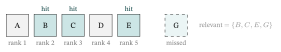
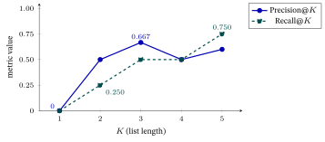
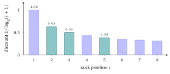
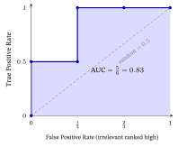
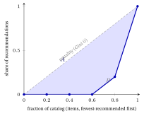
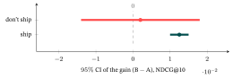
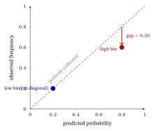
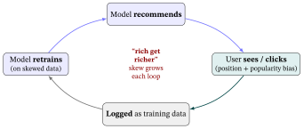

Evaluation Metrics
1. The three questions a metric can answer
Recommendation metrics fall into three families, answering three different questions:
- “How wrong are the predicted numbers?” — rating-error metrics (MAE, RMSE), for when the model predicts a rating (★1–5). §2.
- “Is the ranked list any good?” — top-\(K\) ranking metrics (Precision, Recall, MRR, NDCG, …), for the real task: show a short ordered list and put the good items on top. §4–§9. This is what modern recsys actually reports.
- “Is the list healthy beyond being accurate?” — beyond-accuracy metrics (coverage, diversity, novelty, serendipity), because a recommender that only shows blockbusters can look accurate and still be useless. §10.
Why “metric.” From Greek metron, “measure.” A metric measures how good the output is — and, crucially, different metrics measure different goods, which is why you must pick the one that matches your goal (§13).
These three questions map onto recommendation’s fundamental tasks — and each task fixes not just a metric but a train/test split and a full evaluation protocol (which has itself evolved; §11). The whole picture at a glance:
| Task | What it predicts | Train/test split | Headline metric(s) | Protocol shift |
|---|---|---|---|---|
| Rating prediction | a star value (1–5) | random / \(k\)-fold over ratings | RMSE, MAE (§2) | stable |
| Top-\(N\) ranking | a ranked list of items | random / leave-one-out / temporal (varies — §4) | Recall@\(K\), NDCG@\(K\) (§4–§9), MRR | sampled \(\to\) full |
| Next-item / sequential | the next item in a session | leave-one-out, by time | HR@10, NDCG@10, MRR | sampled \(\to\) full |
| CTR (the ranking stage) | a click probability | random, per-impression | AUC, LogLoss (§8) | stable |
2. Rating-error metrics: MAE, MSE, RMSE
When the model predicts a number (a rating), grade it by how far the prediction is from the truth. Toy: predictions \([4,2,5,3]\) vs. actual \([5,2,3,3]\) → errors \([-1,0,2,0]\).
- MAE — Mean Absolute Error. Average of the absolute errors. “On average, how many stars off am I?” \[\text{MAE}=\tfrac{|{-1}|+|0|+|2|+|0|}{4}=\tfrac{3}{4}=0.75.\]
- MSE — Mean Squared Error. Average of squared errors (the regression loss, Losses & Regularizers §2.1). \[\text{MSE}=\tfrac{1+0+4+0}{4}=1.25.\]
- RMSE — Root Mean Squared Error. Square-root of MSE, to put it back in the original units (stars, not stars²). \[\text{RMSE}=\sqrt{1.25}=1.118.\]
Why the names, and RMSE vs MAE. The names are literal recipes read inside-out: (Root) (Mean) (Squared) Error. The key difference: squaring punishes big misses harder, so \(\text{RMSE}\ (1.118) > \text{MAE}\ (0.75)\) here — the single error of \(2\) dominates RMSE. Use RMSE when large mistakes are especially bad; MAE when every star of error is equally bad (and you want robustness to outliers).
3. The ranking setup — one running example
Real recommenders output a ranked list, and we care whether relevant items (ones the user actually likes) sit near the top. The setup:
- A user whose truly-relevant items are \(\mathcal{R}=\{B,C,E,G\}\) — so \(|\mathcal{R}|=4\).
- The recommender returns the top-\(K\) list (\(K=5\)): \(\;[\,A,\,B,\,C,\,D,\,E\,]\).
- Mark each position relevant (1) or not (0): \(\;[\,0,\,1,\,1,\,0,\,1\,]\) — hits at ranks 2, 3, 5; item \(G\) is relevant but missed (not in the top-5).

Why “@K,” “relevant,” “hit.” “@\(K\)” = evaluated at the top \(K\) positions (users only see a short list, so only the top matters). A relevant item is one the user truly wants (the ground truth). A hit is a relevant item that made the list. Every metric in §4–§7 is computed from this one little list — that is the point: same list, different verdicts. (AUC in §8 needs item scores this list doesn’t carry, so it uses a small separate example.)
4. Hit Rate, Precision@K, Recall@K, F1@K
- Hit Rate (HR@K) — did we get at least one relevant item in the top-\(K\)? Here yes → \(\text{HR@5}=1\). (Averaged over users it becomes the fraction of users with \(\ge 1\) hit.) Blunt but useful when one good item is enough.
- Precision@K — of the \(K\) items I served, what fraction were relevant? \[\text{Precision@5}=\tfrac{\#\text{hits}}{K}=\tfrac{3}{5}=0.6.\]
- Recall@K — of all the relevant items, what fraction did I find in the top-\(K\)? \[\text{Recall@5}=\tfrac{\#\text{hits}}{|\mathcal{R}|}=\tfrac{3}{4}=0.75.\]
- F1@K — the harmonic mean of precision and recall, when you want one number balancing both: \[\text{F1}=\frac{2\,P\,R}{P+R}=\frac{2(0.6)(0.75)}{0.6+0.75}=0.667.\]

The intuition (memorize this). Precision = “don’t waste the user’s attention” (everything I showed should be good); Recall = “don’t miss the good stuff” (find all of it). They trade off: show more items → recall ↑ but precision usually ↓. F1 is the peacemaker — harmonic mean, so it stays low unless both are decent. (Concretely: if \(P=0.1,R=0.9\), the arithmetic mean flatters them at \(0.5\), but F1 \(=\frac{2(0.1)(0.9)}{0.1+0.9}=0.18\) — the harmonic mean refuses to be fooled by one strong half, which is exactly why it is used.)
Why the names. Precision and recall come from information retrieval: precision = exactness of what you returned, recall = how much of the relevant set you recalled (retrieved). F1 is the F-measure with \(\beta=1\) (precision and recall weighted equally).
Their blind spot: none of them care about the order within the top-\(K\) — a hit at rank 1 counts the same as a hit at rank 5. The next metrics fix that.
5. MRR — Mean Reciprocal Rank
MRR asks one thing: how high is the first relevant item? Take the reciprocal \(1/\text{rank}\) of the first hit, and average over users.
In our list the first relevant item (\(B\)) is at rank 2, so for this user \[\text{RR}=\frac{1}{\text{rank of first hit}}=\frac{1}{2}=0.5.\] (First hit at rank 1 → \(1.0\); rank 2 → \(0.5\); rank 3 → \(0.33\) … it falls off fast.)
Why “reciprocal rank,” and when to use it. Reciprocal = \(1/\text{rank}\) — so the earlier the first hit, the bigger the score. Use MRR when one good answer is enough and you want it fast: question-answering, “I’m feeling lucky” search, a single next-track suggestion. It ignores everything after the first hit.
6. MAP — Mean Average Precision
MRR’s perfectionist cousin. Average Precision (AP) rewards getting every relevant item high, not just the first: compute Precision@\(k\) at each rank where a hit occurs, average them, and (by convention) divide by the number of relevant items. MAP is AP averaged over users.
Our hits are at ranks 2, 3, 5: \[ P@2=\tfrac{1}{2}=0.5,\quad P@3=\tfrac{2}{3}=0.667,\quad P@5=\tfrac{3}{5}=0.6, \] \[ \text{AP}=\frac{P@2+P@3+P@5}{|\mathcal{R}|}=\frac{0.5+0.667+0.6}{4}=0.442. \]
Why “average precision,” and its character. It is literally the precision averaged over the hit positions. Because each hit is scored by the precision at that point, a relevant item buried low drags AP down — so MAP rewards pushing all relevant items up. (Convention note: dividing by \(|\mathcal{R}|=4\) charges you for the missed item \(G\); some implementations divide by the number of hits — always check which.)
7. NDCG — Normalized Discounted Cumulative Gain (the gold standard)
The most-reported ranking metric, because it handles everything: graded relevance (not just 0/1), position (high ranks worth more), and comparability across users. Build it up one word at a time:
- Gain — each item’s relevance value \(\text{rel}_i\) (binary \(0/1\) here; could be a ★1–5 grade).
- Cumulative Gain — sum the gains down the list.
- Discounted — divide each gain by \(\log_2(i+1)\) so lower ranks count less (a hit at rank 2 is worth more than one at rank 5; the \(+1\) makes rank 1’s divisor \(\log_2 2 = 1\) — no discount — and a logarithm falls off gently, gentler than \(1/i\), so items deep in the list still differ slightly rather than being crushed): \[ \text{DCG@5}=\sum_{i=1}^{5}\frac{\text{rel}_i}{\log_2(i+1)} =\frac{1}{\log_2 3}+\frac{1}{\log_2 4}+\frac{1}{\log_2 6} =0.631+0.5+0.387=1.518. \]
- Normalized — divide by the Ideal DCG (the DCG of the best possible ordering: all 4 relevant items at the top), so the score lands in \([0,1]\) and is comparable across users with different numbers of relevant items: \[ \text{IDCG@5}=\frac{1}{\log_2 2}+\frac{1}{\log_2 3}+\frac{1}{\log_2 4}+\frac{1}{\log_2 5} =1+0.631+0.5+0.431=2.562, \] \[ \boxed{\text{NDCG@5}=\frac{\text{DCG}}{\text{IDCG}}=\frac{1.518}{2.562}=0.593.} \]

Graded NDCG — a mini-example. NDCG is not limited to binary 0/1 relevance; it handles graded labels such as ★1–5 user ratings. The standard gain formula is \(\text{gain}_i =
2^{\text{rel}_i}-1\) (so rel \(0\!\to\!0\), rel \(1\!\to\!1\), rel \(3\!\to\!7\)). Suppose a list of five items has relevances \(\text{rel}=[3,0,1,0,2]\) (ranks 1–5). Then: \[
\text{DCG}=7(1.000)+0(0.631)+1(0.500)+0(0.431)+3(0.387)
=7.000+0.000+0.500+0.000+1.161=8.661.
\] The ideal ordering places the highest gains first: \([7,3,1,0,0]\), giving \[
\text{IDCG}=7(1.000)+3(0.631)+1(0.500)+0+0=7.000+1.893+0.500=9.393,
\] \[
\text{NDCG}=\frac{8.661}{9.393}=0.922.
\] (Each gain is multiplied by its discount \(1/\log_2(i+1)\) at rank \(i\); e.g.
\(1/\log_2(2)=1.000\), \(1/\log_2(3)\approx0.631\), \(1/\log_2(6)\approx0.387\).)
Why each word earns its place. Gain (relevance is a reward), Cumulative (sum down the list), Discounted (a log-discount for low ranks — diminishing attention), Normalized (÷ ideal → a \(0\)–\(1\) score, \(1\) = perfect order). Use NDCG when position and graded relevance matter — i.e. almost always in modern recsys/IR. It is the book’ default (From Graphs to LightGCN, SSL & Contrastive Learning, and The Spectral / Graph-Filter View report Recall@K and NDCG@K as their headline numbers).
8. AUC — Area Under the ROC Curve
A global ranking metric over all items: pick a random relevant item and a random irrelevant item — what’s the probability the model scores the relevant one higher? That probability is the AUC.
Toy: relevant scores \(\{0.9, 0.6\}\), irrelevant scores \(\{0.7, 0.4, 0.3\}\). There are \(2\times3=6\) (relevant, irrelevant) pairs; the model ranks the relevant one higher in 5 of them (only \(0.6<0.7\) fails): \[ \text{AUC}=\frac{\#\text{correctly-ordered pairs}}{\#\text{pairs}}=\frac{5}{6}=0.833. \] \(0.5\) = random guessing; \(1.0\) = every relevant item above every irrelevant one.

Why “AUC / ROC” (the fun one). AUC = Area Under the Curve; the curve is the ROC = Receiver Operating Characteristic — a term from signal-detection theory (Green & Swets, 1966), with roots in WWII radar-receiver analysis: how well a receiver distinguished signal (real echoes) from noise. The pairwise-probability above equals that area. Closely tied to BPR (Losses & Regularizers §9), which directly optimizes correctly-ordered pairs.
9. All ranking metrics on the same list
Every number below comes from the one list of §3 (\(\mathcal{R}=\{B,C,E,G\}\), top-5 \([A,B,C,D,E]\), hits at ranks 2,3,5). Seeing them together is the fastest way to feel the differences:
| Metric | Value | What it rewarded |
|---|---|---|
| Hit Rate@5 | \(1.0\) | got \(\ge 1\) relevant item |
| Precision@5 | \(0.60\) | 3 of 5 shown were good |
| Recall@5 | \(0.75\) | found 3 of 4 relevant |
| F1@5 | \(0.667\) | balance of the two |
| MRR | \(0.50\) | first hit was at rank 2 |
| MAP | \(0.442\) | all hits’ positions (penalizes missed \(G\)) |
| NDCG@5 | \(0.593\) | positions, normalized to the ideal |
| AUC | \(0.833\)* | global pair-ordering (*from §8’s scores) |
Same recommendation, eight different verdicts — because each metric encodes a different definition of “good.” That is why §13 (choosing) matters.
10. Beyond-accuracy metrics — because accuracy isn’t enough
A recommender that only ever suggests the Top-10 blockbusters can score high on Recall/NDCG and still be a bad product: boring, repetitive, and blind to the catalog (recall the popularity bias / long-tail effect, worked numerically in From Graphs to LightGCN §13). These metrics guard the health of the list:
- Coverage — what fraction of the catalog ever gets recommended? Toy: only 4 distinct items recommended across all users out of 10 → \(\text{coverage}=4/10=0.4\). Low coverage = the long tail is invisible.
- Diversity (intra-list) — how dissimilar are the items within one user’s list? Average pairwise \((1-\text{similarity})\). Toy (3 items, pairwise cosines \(0.5,0.0,0.5\)): \(\text{diversity}=\tfrac{0.5+1.0+0.5}{3}=0.667\). Low = “you watched one sci-fi, here are 10 more sci-fi.”
- Novelty — how non-obvious are the items? Often the self-information of an item’s popularity, \(-\log_2(\text{popularity})\). Toy: an item seen by \(1\%\) of users → \(-\log_2(0.01)=6.64\) bits of novelty (a blockbuster seen by 50% → only \(1\) bit).
- Serendipity — relevant and surprising: a good recommendation the user would not have found themselves (relevant minus what a popularity baseline would have shown). The “delightful surprise” metric; hardest to measure, most valued by users. Toy: of our top-5 list’s \(3\) relevant hits, suppose \(2\) are items a popularity baseline would not have shown (genuinely surprising) and \(1\) is a blockbuster the baseline picks anyway; then \(\text{serendipity@5}=\tfrac{2}{5}=0.4\). (Note Precision@5 was \(0.6\) — it credited all \(3\) hits; serendipity discards the obvious one, crediting only the \(2\) non-obvious finds.)
- Gini coefficient / popularity bias — how concentrated recommendations are on a few popular items (Gini \(0\) = perfectly even across the catalog, \(1\) = all traffic to one item). High Gini = the rich-get-richer blockbuster trap. Toy: a \(5\)-item catalog gets recommended with counts \([8,2,0,0,0]\) (\(10\) recommendations, mean \(\mu=2\)). Two equivalent hand-computations: \[ G=\frac{\sum_i\sum_j |x_i-x_j|}{2\,n^2\,\mu}=\frac{72}{2\cdot 25\cdot 2}=\frac{72}{100}=0.72, \] the average absolute gap between any two items’ counts, scaled to \([0,1)\); or read it off the Lorenz curve below as \(G=\tfrac{A}{A+B}=\tfrac{0.36}{0.5}=0.72\) (here \(B\), the area under the Lorenz curve, is two trapezoids \(\tfrac12(0{+}0.2)(0.2)+\tfrac12(0.2{+}1)(0.2)=0.14\), so the gap \(A=\tfrac12-0.14=0.36\)). A near-monopoly catalog — and a red flag the cheerful Recall@5 of \(0.75\) would never reveal.

Why the names. Coverage = how much of the catalog you cover; diversity = variety; novelty (Latin novus, “new”) = newness/non-obviousness; serendipity (coined by Horace Walpole, 1754, from the fairy tale The Three Princes of Serendip who made happy discoveries by accident) = a fortunate surprise; the Gini coefficient is named after statistician Corrado Gini (1912), borrowed from economics (income inequality). The Lorenz curve it is read from is named after economist Max Lorenz (1905).
11. Evaluating honestly — the protocol behind the number
Every number above assumed two things were already in hand: a test set and, for AUC, the model’s scores. How you produce them decides whether the metric means anything at all — a state-of-the-art NDCG on a sloppy protocol is worth less than a modest one measured cleanly. Five lenses on a trustworthy number, each with a classic trap.
Before the lenses, the big picture: recommendation’s evaluation protocol changed sharply around 2019–2020, after a reproducibility study (Ferrari Dacrema et al., RecSys 2019) and the sampled-metrics critique (Krichene & Rendle, KDD 2020) showed the old regime could reverse published conclusions. The shift, dimension by dimension:
| Protocol choice | Old / legacy (before ~2020) | Modern / SOTA | Why (the lens) |
|---|---|---|---|
| Train/test split | random hold-out | temporal / leave-one-last | (a) no future leak |
| Ranking candidates | item vs. ~100 sampled negatives | the full catalog | (b) sampling can reverse rankings |
| Reporting | one run, a point estimate | mean & std over seeds, + significance | (d) is the gain real? |
| Baselines | often under-tuned | tuned classical baselines (kNN / MF) | Dacrema; Datasets §5 |
| Verdict | offline metric alone | offline filter + online A/B | (c) offline is a proxy |
(a) The train/test split — and the leakage trap. You hide some interactions as the test set and train on the rest. Three common schemes:
- Random holdout — hide a random fraction. Simple, but it can leak the future into the past: you might train on a click that happened after a test click — something the live system could never do.
- Leave-one-out (LOO) — hide each user’s last (or one random) interaction and rank it against the rest. The default in From Graphs to LightGCN, SSL & Contrastive Learning, and The Spectral / Graph-Filter View.
- Temporal / global-timeline split — cut at a timestamp: train on everything before, test on everything after. The most honest, because it mirrors deployment (predict the future from the past). Prefer it whenever timestamps exist.
The trap to avoid is data leakage — any information from the test period seeping into training inflates every metric above and then evaporates in production.
(b) Full vs. sampled ranking — the silent metric-killer. To compute Recall@K / NDCG@K you must rank the held-out relevant item among candidates. Two choices:
- Full ranking — rank it against the entire catalog of unseen items (often millions). Expensive but correct.
- Sampled ranking — rank it against the true item plus a handful (say \(100\)) of randomly sampled negatives. Cheap, and long popular.
The catch: sampled metrics are inconsistent. Krichene & Rendle (KDD 2020) showed that sampling can reverse which model looks better versus full ranking — @K over \(100\) items measures something genuinely different from @K over millions. Report full-ranking metrics, or at minimum disclose the sampling protocol; the modern graph notes evaluate full-ranking for exactly this reason. If compute truly forces sampling, sample the negatives by popularity (not uniformly) so the distractors resemble the hard, popular items a full ranking would surface; use a large sample (\(\ge1000\), not \(100\)); and report the sample size — then read the result as a lower-bound proxy for the full-ranking number, not as comparable across papers that sampled differently.
(c) Offline metrics are proxies — the real judge is online (A/B). Everything above is offline: computed on logged history. But logged data is itself biased — you only ever observe what the old system chose to show. The decisive test is an online A/B test: split live users, serve model A to one half and B to the other, and compare a business metric (click-through, watch-time, revenue). Offline NDCG and online lift routinely disagree; offline is the cheap filter, online is the verdict. The online metrics themselves need defining: click-through rate (CTR) \(=\text{clicks}/\text{impressions}\); dwell / watch-time (how long the user stayed — its distribution is heavy-tailed, so compare medians or a trimmed mean, or use a rank test like Mann–Whitney, not a raw mean); conversion rate (the fraction who took the target action — buy, subscribe); and session length / return rate for longer-horizon health. No offline number predicts these perfectly — NDCG tracks CTR only loosely — which is precisely why the A/B test, not the offline score, is the verdict.
(d) Is the gain real? — statistical significance. A model that beats the baseline by \(0.001\) NDCG may just be lucky noise. Run each model over several random seeds, report mean \(\pm\) standard deviation, and use a paired \(t\)-test (the same machinery as the Probability primer’s confidence intervals) to ask: is this gap bigger than the run-to-run wobble? Report a \(p\)-value (e.g. \(p<0.05\)). A headline number with no significance test — or no stated \(K\) and ranking protocol — is not yet evidence.
Why paired, and what to do when the metric isn’t Gaussian. The test is paired because both models run on the same test users and the same seeds, so you compare them case-by-case and cancel the shared variance — far more sensitive than treating the two runs as independent groups. Over \(5\) seeds a model might score NDCG \(\{0.40,0.41,0.42,0.43,0.44\}\): mean \(0.420\), sample std \(0.016\), standard error \(\text{SE}=0.016/\sqrt5\approx0.0072\), so the \(95\%\) confidence interval (a Student-\(t\) interval — \(n{-}1{=}4\) d.f., \(t^{*}=2.776\), the same machinery as the Probability primer’s §8) is \(0.420\pm2.776(0.0072)=0.420\pm0.020=[0.400,\,0.440]\). But per-user scores are usually not Gaussian (most users score \(0\), a few score \(1\)), so the cleaner tool is the bootstrap: resample the test users with replacement a few thousand times, recompute the metric each time, and read the \(2.5\)th/\(97.5\)th percentiles as the interval — it assumes no distribution at all. Report the interval, not just the point estimate.
The verdict, made concrete — and it is the gain’s interval that decides. Suppose B beats A by a headline \(+0.002\) NDCG@10. Over the \(5\) shared seeds the per-seed gains are \(d=[+0.01,-0.01,+0.02,-0.01,0.00]\): \(\bar d=+0.002\), but they swing in sign, so \(\text{SE}=0.006\), the paired \(t=0.34\) (\(p=0.75\)), and the \(95\%\) CI of the gain is \([-0.014,\,+0.018]\) — it includes \(0\). So the \(+0.002\) is within run-to-run noise and you do not ship B on this evidence. The headline mean never told you that; its interval did. (Test mechanics and three more cases: Probability & Statistics §8.7.)

Bootstrap, with numbers. For the non-Gaussian per-user case above: say \(20\) test users give hit@10 \(=1\) for \(6\) of them (mean \(0.30\)). One resample-with-replacement repeats some users and drops others for \(7/20=0.35\); another gives \(5/20=0.25\). Over a few thousand resamples, the \(2.5\)/\(97.5\) percentiles land at \([0.10,\,0.50]\) — honestly wide for just \(20\) users, and assuming no distribution at all.
(e) Are the scores themselves meaningful? — calibration. Ranking metrics only judge order, but many uses need the score to be a trustworthy probability: a “watch-probability” shown to the user, a threshold for whether to recommend at all, or blending scores across models. A model is calibrated if, among items it scores \(0.8\), about \(80\%\) are actually clicked. Check it with a reliability diagram — bin the predictions and plot predicted vs observed click rate per bin; on the diagonal means calibrated. The one-number summary is the Expected Calibration Error (ECE), the bin-size-weighted average gap. Worked, two bins of \(5\) items: a high-confidence bin predicts \(0.80\) but only \(3/5=0.60\) click (gap \(0.20\)); a low bin predicts \(0.20\) and \(1/5=0.20\) click (gap \(0\)); \(\text{ECE}=\tfrac12(0.20)+\tfrac12(0)=\mathbf{0.10}\) — over-confident. The fixes are cheap post-hoc rescalings — Platt scaling (fit a logistic on the raw scores) or isotonic regression (a monotone step-fit) — that leave the ranking untouched while making the numbers honest.
Platt scaling and isotonic regression — built up. Both methods learn a mapping from raw model scores \(s\) to calibrated probabilities on a held-out validation set (never the test set — the same train/val/test discipline as §11a):
- Platt scaling fits a one-parameter logistic: find scalars \(a\) and \(b\) that minimise cross-entropy between the binary click labels and \[p_{\text{cal}} = \sigma(a\,s + b), \qquad \sigma(z)=\tfrac{1}{1+e^{-z}}.\] With \(a>0\) the shape is fixed (a sigmoid); only the position (\(b\)) and slope (\(a\)) are fitted — cheap even on large validation sets. For over-confident scores the slope \(a\) is typically estimated \(<1\), and together with a shifted intercept \(b\) the fitted map \(\sigma(a\cdot s+b)\) pulls predicted probabilities toward the observed rate — but both parameters act jointly, so it is the combination \(\sigma(a\cdot s+b)\), not \(a\) alone, that determines the calibrated output.
- Isotonic regression fits a free monotone (non-decreasing) step function — no parametric shape assumed. Given the \((s,\text{click})\) pairs, it finds the piecewise-constant function \(g(s)\) that minimises squared error subject to \(g(s_i)\le g(s_j)\) whenever \(s_i\le s_j\), solved by the pool-adjacent-violators (PAV) algorithm in \(O(n)\). More flexible than Platt scaling but needs more validation data to avoid over-fitting the step function.
Both are post-hoc: they are applied to a frozen model’s output scores without any retraining, and both preserve the original ranking (a monotone remap cannot swap ranks). The key reference is Niculescu-Mizil & Caruana (ICML 2005), who benchmarked both methods across classifiers and showed that Platt scaling works best when the raw scores already have a sigmoid-like shape (e.g. SVMs, boosting), while isotonic regression beats Platt when the miscalibration is irregular — but at the cost of needing more data.

The one-paragraph protocol checklist. Before trusting any Recall@K / NDCG@K: (1) split by time if you can, and never leak; (2) rank against the full catalog, or disclose the sampling; (3) treat offline as a proxy and confirm with an A/B test; (4) report mean \(\pm\) std over seeds with a significance test, and always state \(K\) and binary-vs-graded relevance. The fanciest metric on a leaky, sampled, single-seed protocol is worth less than Recall@20 measured honestly.
In practice. Start with the cheap, standard pair: Recall@\(K\) (or NDCG@\(K\)) plus one beyond-accuracy number — coverage or Gini is enough. Serendipity is aspirational: it needs a baseline and user labels, so it is rarely computed in published work. Rank against the full item catalog, not a sampled handful of negatives — Krichene & Rendle (KDD 2020) showed that sampled top-\(K\) metrics can reverse which model wins versus full ranking. Finally, guard against leakage: if interactions are timestamped, use a time-based split so nothing from the test period (or its future) leaks into training — the way From Graphs to LightGCN and The Spectral / Graph-Filter View evaluate.
→ Which frameworks enforce this? The Implementation Choices appendix §5 lists the toolkits that bake in these protocols (RecBole, Cornac, Elliot) and the papers behind each pitfall here — Krichene & Rendle on sampled metrics, Ferrari Dacrema et al. on under-tuned baselines, Ji et al. on data leakage.
12. Bias, fairness, and the feedback loop
Every metric so far quietly assumed the test set was a fair sample of what the user would have liked. It is not. A recommender’s logged data is not a random sample — it is what the system itself chose to show and what the user then chose to click. So an item with no clicks might be genuinely disliked, or it might simply never have been shown. This section names the biases that creates, the loop that makes them worse, the standard tool to correct them (IPS), and the second question metrics usually skip: not just is the list good? but good for whom?
12.1 The core problem — the data is missing-not-at-random (MNAR)
Statisticians call data MNAR — Missing-Not-At-Random when whether a value is observed depends on the value itself (and on choices that correlate with it). Recommendation logs are the textbook case: you mostly observe interactions for items the system promoted, so the missing entries are missing for a reason, not by coin-flip. Computing a metric naively over this log therefore measures the old system’s habits as much as the new model’s quality — the estimate is biased.
Why “MNAR.” Read literally: the data that is Missing is missing Not At Random. Its opposite, missing-at-random, is the comfortable assumption (the gaps are just coin-flips) that lets you ignore the problem — and that recommender logs almost never satisfy.
12.2 The bias taxonomy
Three biases, defined once each. They are distinct but feed one another (§12.3).
- Selection / exposure bias — users can only interact with items they were shown. Un-shown items have no feedback, so their absence from the clicks says nothing about whether the user would have liked them. (“Selection” = the system selected what to expose; “exposure” = only exposed items can be judged.)
- Position bias — within a shown list, items higher up get more clicks regardless of true relevance, simply because they are seen first. A rank-1 slot can out-click a more relevant rank-8 item — so a click is partly a vote for position, not only for quality.
- Popularity bias — already-popular items dominate exposure and feedback, crowding out the long tail. This is the Gini / long-tail effect of §10, made dynamic — see From Graphs to LightGCN §13 for the numerical version.
12.3 The feedback loop — why bias compounds
The three biases are tied together by a dynamic that makes them grow over time:
the model recommends popular / high-position items → users interact with those (because those are what they saw) → the new interactions are logged as training data → that data is even more skewed toward the popular / high-position items → the next model trained on it is more biased → it recommends those items even harder …
This is the “rich get richer” spiral: a small head-start in exposure becomes a self-reinforcing advantage. The crucial lesson is that bias is not a one-off measurement error you correct once — left alone, the loop amplifies it with every retraining cycle. It must be designed against continuously (§12.6), and audited over time, not just at a single snapshot.

12.4 IPS — inverse propensity scoring (the standard fix)
If the problem is that some items were shown far more than others, the fix is to re-weight each observed interaction by how unlikely it was to be observed in the first place. That is IPS — Inverse Propensity Scoring.
- Propensity = the probability that an item was shown / observed (its propensity to be seen). Call it \(p\).
- Weight each observed interaction by \(\mathbf{1/p}\) — the inverse of its propensity. An over-exposed item (high \(p\)) gets down-weighted; a rarely-shown item (low \(p\)) gets up-weighted, so its one hard-won click counts for more. The re-weighted average is an unbiased estimate of the metric you would have measured under uniform exposure.
Worked example (check by hand). Item \(A\) was shown with propensity \(p_A=0.8\); item \(B\) with \(p_B=0.2\). A click on each contributes its inverse propensity: \[ \text{click on }A \;\to\; \frac{1}{p_A}=\frac{1}{0.8}=\mathbf{1.25}, \qquad \text{click on }B \;\to\; \frac{1}{p_B}=\frac{1}{0.2}=\mathbf{5}. \] So a click on the rarely-shown \(B\) is worth \(5/1.25=\mathbf{4\times}\) a click on the heavily-shown \(A\) in the unbiased estimate. Intuition: \(B\) “had to overcome” being shown only a fifth as often, so each \(B\)-click is far stronger evidence of genuine preference.
Why “inverse propensity.” You weight by the inverse (\(1/p\)) of the propensity (\(p\), the chance of being shown). This is exactly the \(1/Q\) importance-weighting behind the sampled-softmax log-\(Q\) correction in Losses & Regularizers §10 — there you divide by an item’s sampling probability to undo a biased negative sampler; here you divide by its exposure probability to undo a biased logging policy. Same idea — un-bias an estimate by dividing out the probability that produced the sample — in a different place. (Caveat: tiny propensities give huge weights and noisy estimates, so in practice they are clipped.)
12.5 Fairness — “good for whom?”
Accuracy metrics ask is the list good? Fairness asks the sharper question: good for whom? Recommendation is inherently multi-stakeholder — at least users, providers (item creators / sellers), and the platform — and a list that is great on average can be systematically worse for some group. Two sides:
- Consumer / user-side fairness — is recommendation quality (Recall, NDCG, …) comparable across user groups (e.g. by age, gender, region)? Unfair if one group reliably gets worse lists.
- Provider / item-side fairness — is exposure comparable across item creators / groups? The long tail being starved of exposure (§10) is partly a provider-fairness problem: a few providers capture most of the recommendation slots.
Two standard group-fairness definitions, borrowed from classification, one line each:
- Demographic parity — equal selection / exposure rate across groups (each group is recommended / shown at the same rate, regardless of base rates).
- Equal opportunity — equal true-positive rate across groups (among users who would like an item, each group is equally likely to actually have it surfaced).
Both, on tiny numbers. Demographic parity (provider exposure): a feed has \(100\) recommendation slots and two provider groups that each own half the catalogue; group A (popular studios) fills \(85\) slots, group B (long-tail creators) fills \(15\). The exposure rates are \(0.85\) vs \(0.15\) — a parity gap of \(0.70\), where parity would require \(0.50/0.50\). Equal opportunity (consumer TPR): among the users who genuinely would like a given item, what fraction get it in their top-\(K\)? Group 1: \(120\) of \(200\) → TPR \(0.60\); group 2: \(80\) of \(200\) → TPR \(0.40\) — an equal-opportunity gap of \(0.20\). The two ask different questions: parity wants equal exposure regardless of preference; equal opportunity wants an equal hit-rate among those who would actually like the item — a model can satisfy one and fail the other.
These usually trade off against accuracy: forcing equal exposure can lower headline NDCG, because the unconstrained optimum concentrates on the easy, popular head. There is no free lunch — fairness is a deliberate choice about which good you are optimising, the same lesson as §1’s “different metrics measure different goods.”
12.6 Practitioner takeaways
- Report by group, not just on average. Break out exposure / coverage (§10) per user and per provider group — an aggregate number hides who is being underserved.
- Prefer IPS-corrected offline metrics for click data, since raw clicks carry position and exposure bias. Estimate the propensity \(Q\) (the chance an item was shown) from exposure logs — an item’s display-count share, a fitted position-bias curve, or, best, a small randomized-exposure slice — and clip extreme propensities so one rarely-shown item can’t dominate the estimate.
- Stratify by popularity, not just the average. Report NDCG/Recall on head vs. tail items separately: a model can lift top-line NDCG purely by serving the popular head better while the tail rots, and only a per-bucket split reveals it (the same lesson as the Gini coefficient, §10).
- Audit the feedback loop over time, not once. The “rich get richer” skew (§12.3) is a trajectory: track concentration (Gini, §10) and group exposure across successive retrainings, and confirm real gains with an A/B test (§11c), the only judge the loop cannot fool.
13. Which metric, when?
| Your goal | Reach for |
|---|---|
| Predict a rating accurately (★1–5) | RMSE (punish big misses) or MAE (robust) |
| Top-\(K\) list, “find all the good items” | Recall@K |
| Top-\(K\) list, “don’t waste slots” | Precision@K (or F1@K for balance) |
| Just need one good item, fast | MRR (or HR@K) |
| Position + graded relevance (the default) | NDCG@K |
| Overall ranking quality (pairwise) | AUC (ties to BPR, Losses & Regularizers §9) |
| Is the catalog used / list varied / fresh? | coverage, diversity, novelty, serendipity, Gini |
Golden rule: report at least one accuracy metric and at least one beyond-accuracy metric — a single number hides the popularity trap. Always state the \(K\) (Recall@10 \(\ne\) Recall@50) and whether relevance is binary or graded.
14. Exercises
Work these by hand — the numbers are kept tiny on purpose, and most reuse the chapter’s running example (relevant set \(\mathcal{R}=\{B,C,E,G\}\), top-5 list \([A,B,C,D,E]\) with hits at ranks 2, 3, 5). Full worked solutions are in the Solutions appendix at the back of the book.
(compute) A rating model predicts \([3,5,2,4]\) for four movies whose true ratings are \([4,5,4,3]\). Compute the MAE and the RMSE (§2). Which of the two is larger here, and which single prediction is most responsible for that gap?
(compute) For the chapter’s running list (top-5 \([A,B,C,D,E]\), relevant \(\mathcal{R}=\{B,C,E,G\}\), so 3 hits among the 5 shown and 4 relevant in all), compute Precision@5, Recall@5, and F1@5 (§4). State in one phrase what each of the three numbers is telling you.
(compute) Using the same running list, compute the reciprocal rank (the per-user term behind MRR, §5). Then a second user’s list puts their first relevant item at rank 1; compute the MRR averaged over the two users.
(compute) The running list has hits at ranks 2, 3, 5. Compute the Average Precision (§6): the precision at each hit position, averaged, then divided by \(|\mathcal{R}|=4\). Show the three Precision@\(k\) values you used.
(compute) Rebuild the chapter’s NDCG@5 (§7) from scratch for the running list. Compute \(\text{DCG@5}=\tfrac{1}{\log_2 3}+\tfrac{1}{\log_2 4}+\tfrac{1}{\log_2 6}\) and the ideal \(\text{IDCG@5}\) (all four relevant items at the top), then divide. You should land on the chapter’s \(0.593\). (Useful: \(\log_2 3\approx1.585\), \(\log_2 5\approx2.322\), \(\log_2 6\approx2.585\).)
(apply) AUC as a pairwise probability (§8). A model scores two relevant items \(\{0.8,\,0.5\}\) and two irrelevant items \(\{0.6,\,0.3\}\). List the \(2\times2=4\) (relevant, irrelevant) pairs, count how many the model orders correctly (relevant scored higher), and report the AUC. Is it above the \(0.5\) of random guessing?
(apply) IPS debiasing weights (§12.4). Item \(A\) was shown with propensity \(p_A=0.8\) and item \(B\) with \(p_B=0.2\). (a) Give the inverse-propensity weight \(1/p\) for a click on each.
- The log shows two clicks on \(A\) and one on \(B\); compute each item’s IPS-weighted total, and explain why the less-clicked \(B\) ends up counting for more than \(A\).
(extend) Gini and serendipity (§10). (a) A 5-item catalog is recommended with counts \([6,3,1,0,0]\) (10 recommendations, mean \(\mu=2\)); compute the Gini coefficient \(G=\dfrac{\sum_i\sum_j|x_i-x_j|}{2n^2\mu}\) and say whether this catalog is more or less concentrated than the chapter’s \([8,2,0,0,0]\) (\(G=0.72\)). (b) Of the running list’s 3 relevant hits, suppose only 2 are items a popularity baseline would not have shown; compute serendipity@5 and explain why it is below the Precision@5 you found in E2.
(concept) For each goal below, name the single metric from §13 you would report, and say in a few words why: (a) a “play one perfect next song” feature where only the first suggestion matters; (b) a homepage rail where you must surface all of a user’s relevant items somewhere in the top-20; (c) a check that the recommender is not collapsing onto a handful of blockbusters.
(concept) A new model beats the baseline by \(0.004\) NDCG@10 (§11). (a) Why is that headline number not yet evidence the new model is better — what two protocol facts (§11b, §11d) would you demand before believing it? (b) The two were compared by ranking each held-out item against \(100\) sampled negatives; cite the result (§11) that explains why this can flip which model looks better versus full-catalog ranking.
(apply) — looks better, but should you ship? Model B beats A by a headline \(+0.003\) NDCG@10. Over \(5\) shared seeds the per-seed gains are \(d=[+0.012,-0.006,+0.011,-0.004,+0.002]\). (a) Confirm the mean gain \(\bar d\) is positive. (b) Its \(95\%\) CI works out to about \([-0.007,\,+0.013]\) — does it clear \(0\)? (c) Ship B or not, and give the one-sentence reason (§11d).
15. Where this fits in the book
| Metric (here) | Where it shows up |
|---|---|
| Recall@K, NDCG@K | the headline numbers of From Graphs to LightGCN, SSL & Contrastive Learning, and The Spectral / Graph-Filter View (LightGCN/RLMRec report Recall@K and NDCG@K) |
| RMSE/MAE | Traditional RecSys §6 (rating prediction; Netflix Prize) |
| AUC ↔︎ BPR | Losses & Regularizers §9 — BPR optimizes correctly-ordered pairs, i.e. AUC |
| Coverage / Gini / long-tail | From Graphs to LightGCN §13 (popularity bias, worked numerically) and the SSL fixes in SSL & Contrastive Learning |
| NDCG selection metric | the model-selection choices discussed across From Graphs to LightGCN, SSL & Contrastive Learning, and The Spectral / Graph-Filter View |
| Evaluation protocol (§11) | full-ranking + LOO/temporal splits + per-seed significance — how From Graphs to LightGCN, SSL & Contrastive Learning, and The Spectral / Graph-Filter View are actually measured |
Carry this forward: rating error (RMSE/MAE) grades numbers; ranking metrics (Precision/Recall/F1/HR/MRR/MAP/NDCG/AUC) grade the ordered list — NDCG is the default; beyond-accuracy metrics (coverage/diversity/novelty/serendipity/Gini) grade the list’s health. Pick the metric that matches what you actually want, and never report accuracy alone.
16. Glossary
| Term | Plain meaning |
|---|---|
| Relevant item | A ground-truth item the user actually likes. |
| @K | Evaluated over the top \(K\) recommended positions only. |
| MAE / MSE / RMSE | Mean Absolute / Mean Squared / Root-Mean-Squared rating error. |
| Hit Rate (HR@K) | Fraction of users with \(\ge 1\) relevant item in the top-\(K\). |
| Precision@K | Of the \(K\) shown, the fraction relevant. |
| Recall@K | Of all relevant items, the fraction in the top-\(K\). |
| F1@K | Harmonic mean of precision and recall. |
| MRR | Mean Reciprocal Rank — \(1/\)rank of the first relevant item, averaged. |
| AP / MAP | Average Precision (precision averaged over hit positions) / its mean over users. |
| DCG / IDCG / NDCG | Discounted Cumulative Gain / its ideal / the normalized ratio in \([0,1]\). |
| AUC / ROC | Area Under the ROC Curve = P(score of a random relevant > random irrelevant). |
| Coverage | Fraction of the catalog ever recommended. |
| Diversity | Average dissimilarity within a recommended list. |
| Novelty | Non-obviousness, often \(-\log_2(\text{popularity})\). |
| Serendipity | Relevant and surprising. |
| Gini coefficient | Concentration of recommendations on few items (\(0\) even … \(1\) concentrated). |
| Train/test split | How held-out test data is chosen: random, leave-one-out (LOO), or temporal (by timestamp). |
| Data leakage | Test-period information seeping into training; silently inflates every metric. |
| Full vs. sampled ranking | Rank the true item against the whole catalog vs. a few sampled negatives (the latter is inconsistent). |
| A/B test (online eval) | Serve two models to live user halves and compare a business metric — the real verdict. |
| Significance (paired \(t\)-test) | Is a gain bigger than run-to-run seed noise? Report mean \(\pm\) std and a \(p\)-value. |
| MNAR data | Missing-Not-At-Random: whether an interaction is observed depends on what the system chose to show — recommender logs are the textbook case. |
| Selection / exposure bias | Only items the system showed can get feedback; un-shown items look “disliked” by silence. |
| Position bias | Higher-ranked slots draw more clicks regardless of true relevance. |
| Feedback loop | Recommend → click → log → retrain on skewed data → more skew; the “rich get richer” spiral that compounds bias. |
| Propensity / IPS | Propensity = probability an item was shown; IPS re-weights each interaction by \(1/\)propensity to undo exposure bias. |
| Demographic parity | Equal selection / exposure rate across groups. |
| Equal opportunity | Equal true-positive rate across groups (the truly-relevant are surfaced equally). |
| Provider vs. consumer fairness | Comparable exposure across item creators (provider) vs. comparable quality across user groups (consumer). |
17. References
Ekstrand, M. D., Das, A., Burke, R., & Diaz, F. (2022). Fairness in information access systems. Foundations and Trends in Information Retrieval, 16(1–2), 1–177. https://doi.org/10.1561/1500000079
Fawcett, T. (2006). An introduction to ROC analysis. Pattern Recognition Letters, 27(8), 861–874. https://doi.org/10.1016/j.patrec.2005.10.010
Herlocker, J. L., Konstan, J. A., Terveen, L. G., & Riedl, J. T. (2004). Evaluating collaborative filtering recommender systems. ACM Transactions on Information Systems, 22(1), 5–53. https://doi.org/10.1145/963770.963772
Järvelin, K., & Kekäläinen, J. (2002). Cumulated gain-based evaluation of IR techniques. ACM Transactions on Information Systems, 20(4), 422–446. https://doi.org/10.1145/582415.582418
Krichene, W., & Rendle, S. (2020). On sampled metrics for item recommendation. In Proceedings of the 26th ACM SIGKDD Conference on Knowledge Discovery and Data Mining (KDD). https://doi.org/10.1145/3394486.3403226
Niculescu-Mizil, A., & Caruana, R. (2005). Predicting good probabilities with supervised learning. In Proceedings of the 22nd International Conference on Machine Learning (ICML) (pp. 625–632). https://doi.org/10.1145/1102351.1102430
Manning, C. D., Raghavan, P., & Schütze, H. (2008). Introduction to information retrieval. Cambridge University Press. https://nlp.stanford.edu/IR-book/
Ricci, F., Rokach, L., & Shapira, B. (Eds.). (2022). Recommender systems handbook (3rd ed.). Springer.
Schnabel, T., Swaminathan, A., Singh, A., Chandak, N., & Joachims, T. (2016). Recommendations as treatments: Debiasing learning and evaluation. In Proceedings of the 33rd International Conference on Machine Learning (ICML) (pp. 1670–1679). https://proceedings.mlr.press/v48/schnabel16.html
Online sources verified June 2026.